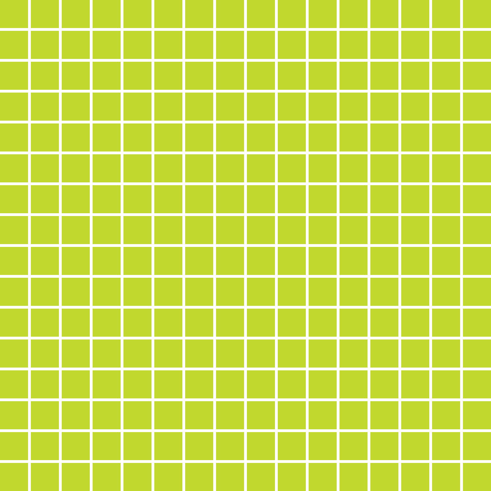
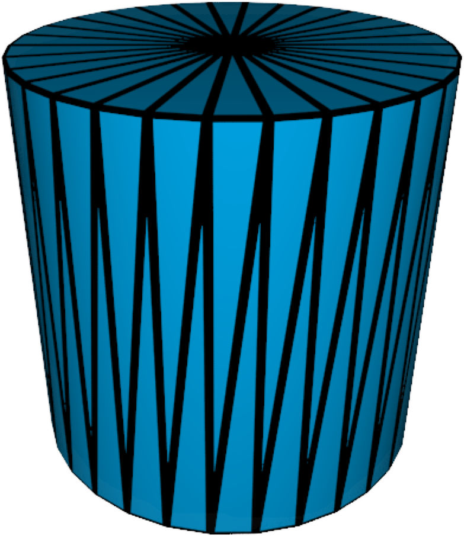
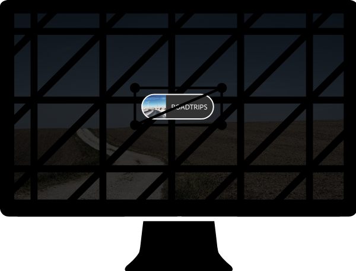

Designing Performant Motion Graphics
for the Web
Adobe Web Platform Team
- Make the web more expressive
- Advocate for designers
- Contribute to browsers
- Contribute to web standards
About Me
- Web developer
- Browser engineer
- Current Project: CSS Filters in Firefox
Overview
- Motion Graphics
- Hardware
- Drawing a Web Page
- CSS Animations & Transitions
Motion Graphics
Motion Graphics Defined
Any change or movement of pixels over time.
Show or Hide Content
Direct the User's Attention
Benefits of Motion
- Keeps the user in context during user interface changes.
- Gradual changes are easier to follow than sudden changes.
Motion is Powerful
- Humans instinctively look at movement.
- Be careful where you direct their attention.
Good Performance Helps
- Delights your user.
- Adds credibility to your message.
Poor Performance Hurts
- Frustrates your user.
- Distracts your user.
- Looks unprofessional.
Performance Holy Grail
60 frames per second
Performance is Hard
One slow frame can interrupt an otherwise smooth experience.
Hardware
CPU
General purpose processor
CPU
Typically 1-8 big cores
Big Cores
Can process anything— network packets, mouse input, etc.
GPU
Highly specialized processor
GPU
Hundreds of little cores
Pixels and Points
- Each core is specialized to process a pixel (r,g,b) or a point (x,y,z).
- Together, many cores can process lots of pixels or points in parallel.
Triangles
- GPUs specialize in drawing triangles.
- Triangles are made of 3 points and filled in with pixels.
Shapes
All shapes can be made of triangles.
Rectangles
- Two triangles make a rectangle.
- Browsers draw lots of rectangles.
Texturing
- GPUs can apply images to the surfaces of triangles.
- These images can be anything and are known as "textures".
Screen Drawing
GPUs also specialize in drawing lots of triangles (and their pixels) to the screen quickly.

Pixel Moving
GPUs can move, scale, or rotate triangles (and their pixels) quickly.
Shading
GPUs can modify a lot of pixels in the same way quickly.
GPUs are Powerful
Millions of textured triangles
Drawing Web Pages
Browser
Browser instructs the CPU and GPU to work together and draw a web page.
Two Types of HTML Elements
- Hardware Accelerated Elements
- Non-Hardware Accelerated Elements
Hardware Accelerated Elements
Use the GPU to draw to the screen.
Non-Hardware Accelerated Elements
Draw into hardware accelerated elements, which draw to screen.
Acceleration Triggers
- CSS 3D Transforms.
- Animating opacity, transform, or filter using CSS.
- Overlap with hardware accelerated elements.
- And more.
Lifecycle of a Hardware Accelerated Element
The Element
1. Parsing
CPU reads and interprets HTML & CSS.
2. Layout
- CPU determines the size and position of the element.
- CPU determines the size and position of child elements.
3. Determine Hardware Acceleration
- CPU decides whether the element is hardware accelerated or not, based on the HTML & CSS.
- Let's assume the element is hardware accelerated.
4. Painting
CPU draws the element and its children into an offscreen image (aka "texture").
5. Synchronization
CPU uploads the element's texture to the GPU.
6. Geometry Construction
GPU creates two or more triangles representing the element.

7. Screen Positioning
GPU decides how to position, rotate, or scale the element's triangles on the screen.

8. Texturing
GPU applies the element's texture to the triangles.
9. Special Effects
If needed, GPU modifies the pixels on the triangle for special effects like CSS Filters (drop-shadow, grayscale, etc.).
10. Compositing
GPU draws the element's triangles on top of the other elements in your page.
Animation Performance
Less is More
- The less the browser has to do every frame, the better your performance.
- In other words, the less the CPU and GPU have to do every frame, the better.
Reduce CPU Usage
Because we can.
Example Site

Animating CSS Height
Animating CSS Transform
Animating CSS Height
header {
transition: height ease-in 1s;
}
.initial {
height: 0;
}
.final {
height: 200px;
}
Appearance Changes
Every frame, the element's size and internal appearance changes.
Animating CSS Height
Every frame, the browser has to do almost every costly step:
- Parsing
- Layout
- Determine Hardware Acceleration
- Painting
- Synchronization
- Geometry Construction
- Screen Positioning
- Texturing
- Special Effects
- Compositing
Animating CSS Transform
body {
transition: transform ease-in 1s;
}
.initial {
transform: translate3d(0, -200px, 0);
}
.final {
transform: translate3d(0, 0, 0);
}
Constant Appearance
- Every frame, the element's size and internal appearance stays the same.
- Only its position on the screen changes.
Animating CSS Transform
Every frame, the browser can skip many costly steps:
- Parsing
- Layout
- Determine Hardware Acceleration
- Painting
- Synchronization
- Geometry Construction
- Screen Positioning
- Texturing
- Special Effects
- Compositing
GPU-Centric
- The remaining steps are almost entirely on the GPU.
- The GPU is specialized for those steps.
Skipping Synchronization
- Skipping texture uploads from the CPU to the GPU can save a lot of time.
- The CPU and GPU can work more independently.
Live Demo
Design Takeaways
Design animations and transitions intended for the GPU:
- move, rotate, scale
- adjust opacity
- blur, drop-shadow, grayscale, etc.
- any creative combination of the above
Coding Takeaways
Animate CSS properties intended for the GPU:
- transform
- opacity
- filter